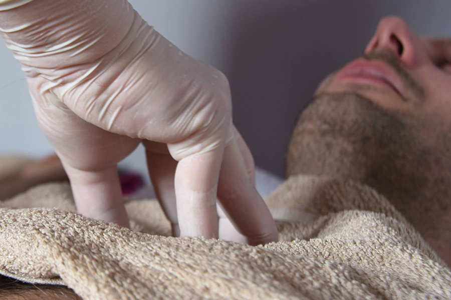
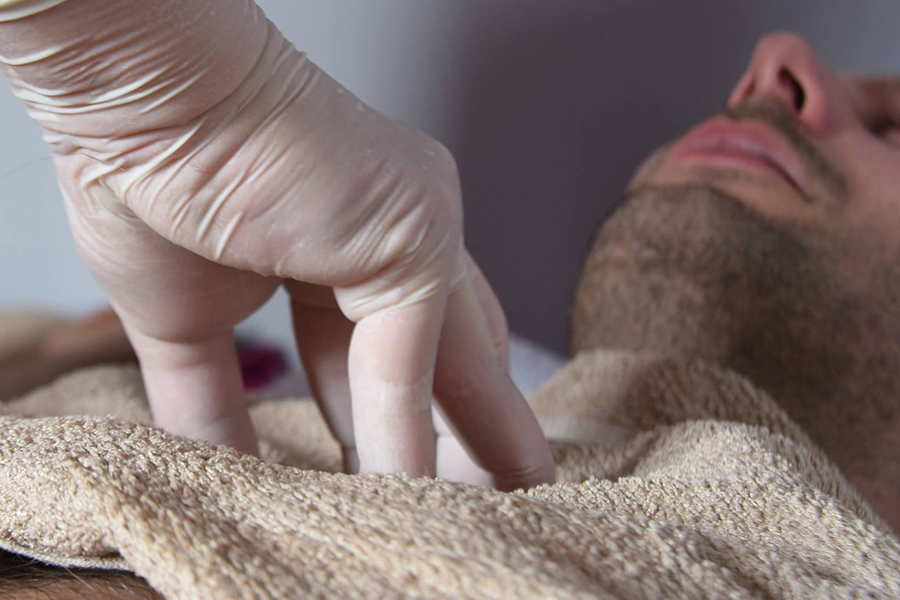

• INFO •
Dvogodišnja "Škola abdominalne masaže" integrira Thai masažu i masažu abdomena u strukturalnu terapiju. Ova edukacija se održava kroz period od dvije godine u Rovinju, u Yoga centru Sadhana. Namjera je da svi polaznici u ovom kontinuitetu potpuno usvoje odabrane tehnike koje će sa sigurnošću moći primijeniti u svojoj praksi.
• TEME I DATUMI •
• 30.8./1.9.2017. - Dubinski rad na psoasu
• 17/18.3.2017. - Abdominalna masaža, Chi Nei Tsang 1 (detoks organa)
• 26/27.5.2018. - Abdominalna masaža, Chi Nei Tsang 2 (indirektni rad na organima, rad na pupku)
• 13/14.10.2018. - Detoks pluća (astma)
• 8/9.12.2018. - Žensko zdravlje / reproduktivni organi
• 30/31.3.2019. - Samomasaža trbuha / Abdominalna masaža nakon poroda
• 5/6.10.2019. modul iznanađenja
Svi moduli osim Dubinskog rada na psoasu podučavat će se isključivo u okviru ove dvogodišnje edukacije.
DUBINSKI RAD NA PSOASU
Najvažniji, a toliko zapostavljen skeletni mišić u tijelu. Smješten duboko unutar prednje strane zgloba kuka i
lumbalne kralježnice, psoas je krucijalan mišić za optimalnu posturu, kretanje i generalno blagostanje tijela.
Njegova funkcija i važnost sežu daleko iznad biomehanike, prema živčanom i energetskom sustavu. Razumijevanje i rad
na psoasu može pomoći u eliminaciji bolova u donjim leđima, zdjelici i nogama, u postizanju ispravne posture tijela,
reduciranju trauma i stvaranju slobodnog energetskog protoka. Svaka različitost u tenziji njegove lijeve u odnosu
na desnu stranu afektirati će posturu, samim time i unutarnje organe, živce i žlijezde.
Duboki rad na psoasu odnosi
se na: OPUŠTANJE – ISTEZANJE – BALANSIRANJE
CHI NEI TSANG
Chi Nei Tsang je tehnika abdominalne masaže potekla iz Taoizma, a fuzija je Tradicionalne kineske medicine i Thai
tehnika masaže unutarnjih organa. U prijevodu doslovno znači “rad s energijom unutarnjih organa” ili “transformacija
chi energije unutarnjih organa”.
Povezuje se s praksom budističkih svećenika koji su živjeli u manastirima, a kao
pomoć na svom putu koristili su ove tehnike da bi detoksicirali i ojačali svoje tijelo kako bi održali svoju duhovnu
praksu na visokoj razini.
CNT detoksicira i tonificira unutarnje organe, oslobađa potisnute emocije i otpušta strukturalne tenzije. Chi,
životna energija, kreće se unutarnjim tjelesnim kanalima, živčanim, krvožilnim i limfnim sustavom.
Svi navedeni koncentrirani su i susreću se u abdomenu, koji ima ulogu njihovog “kontrolnog centra”. Tenzije, brige,
strahovi (negativne emocije) i svakodnevni stres akumuliraju se upravo u abdomenu, što može voditi do nebrojeno puno
oboljenja, uključujući, ali ne i samo: lošu probavu, konstipaciju, nadutost, nesanicu, toksičnost cijelog tijela,
lošu kvalitetu kože i nemogućnost gubljenja kilaže.
DETOKS PLUĆA
Cilj dubinskog rada na plućima, kao kod astmatične masaže, je povećati
cirkulaciju limfe - čiste vodene tekućine koja se kreće kroz tijelo sakupljajući bakterije i viruse da bi ih
filtrirala kroz limfne čvorove.
Pluća i kardiovaskularni sustav zajedno rade na procesu eliminacije ugljičnog dioksida i apsorpciji kisika
u krvi. Pravilno disanje dozvoljava plućima da obavljaju svoju funkciju, eliminaciju ugljičnog dioksida i ostalih
toksina koji se nakupljaju u krvi i uzrokuju kiselost tijela.
Danas uz upitnu kvalitetu zraka koji udišemo, stres, nedostatak vježbanja ili emocionalnu nabijenost imamo pregršt uvjeta koji
ne pomažu vitalnoj izmjeni već oslabljuju zdravlje, imunitet i otpornost pojedinca kroz vrijeme. Aktivacija pulsa pluća poboljšat
će optok krvi i ojačati kapacitet disanja, donoseći više životne energije u tijelo, osnažiti zdravlje te uspostaviti emocionalni balans.